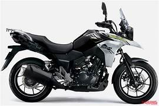

Suzuki V-Strom 250 vale a pena?

Conheça a Suzuki V-Strom 250
A Suzuki V-Strom 250 é uma moto do estilo trail, pensada para quem busca conforto, versatilidade e capacidade de rodar tanto na cidade quanto em viagens. Inspirada nas motos maiores da linha V-Strom, ela oferece um visual aventureiro e uma proposta equilibrada.
Por isso, muitos motociclistas pesquisam se a Suzuki V-Strom 250 vale a pena antes de investir nesse modelo. A moto promete ser uma opção intermediária entre motos urbanas e modelos voltados para longas viagens.
Seu design robusto e posição de pilotagem elevada trazem mais segurança e conforto, principalmente em trajetos longos.
Motor e desempenho
A V-Strom 250 conta com um motor de aproximadamente 250 cilindradas, com foco em durabilidade e eficiência.
A velocidade máxima gira em torno de 130 km/h, permitindo rodar bem tanto em estradas quanto em vias urbanas.
O desempenho é equilibrado, ideal para quem quer viajar com tranquilidade sem abrir mão da economia.
Consumo de combustível
Um dos pontos positivos da Suzuki V-Strom 250 é o consumo, que costuma ficar entre 25 km/l e 30 km/l.
Considerando o porte da moto, esse consumo é considerado bom, especialmente para viagens mais longas.
Preço da Suzuki V-Strom 250
O preço da Suzuki V-Strom 250 no Brasil costuma ficar na faixa de R$ 25.000 a R$ 30.000, dependendo da região e versão.
No mercado de usadas, os valores podem variar entre R$ 18.000 e R$ 24.000.
Apesar de não ser uma moto barata, o conjunto de conforto e versatilidade pode justificar o investimento.
Conforto e viagens
A V-Strom 250 se destaca no conforto. O banco é bem projetado, a posição de pilotagem é ereta e a suspensão ajuda a lidar com diferentes tipos de terreno.
Isso faz dela uma excelente opção para quem gosta de viajar ou percorrer longas distâncias com mais comodidade.
Conclusão: Suzuki V-Strom 250 vale a pena?
De forma geral, a resposta é que a Suzuki V-Strom 250 vale a pena para quem busca uma moto confortável, versátil e preparada para viagens.
Ela não é focada em esportividade, mas entrega um conjunto muito equilibrado para quem valoriza conforto e autonomia.
Para uso misto entre cidade e estrada, é uma das melhores opções da categoria.
Outras notícias
Suzuki Gixxer 150 vale a pena?